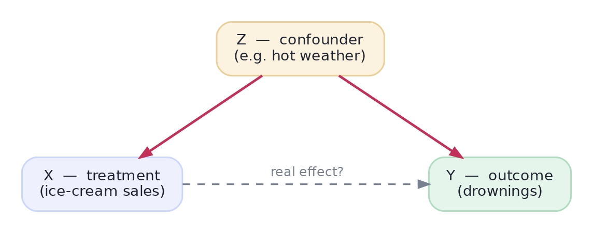

Correlation vs. Causation
Why the most important question is the hardest.
Almost every question a business actually cares about is causal: "Will this discount increase retention? Does this drug reduce mortality? Would hiring more support staff cause higher satisfaction?" But the data you have is usually observational — you watched what happened, you didn't get to intervene. And observational data is riddled with a trap that has fooled scientists, journalists, and executives for centuries: correlation is not causation. This track is how you tell the difference — and it's some of the most valuable judgement a data scientist can offer.
ConfoundingThe problem: things that move together needn't cause each other
Ice-cream sales and drownings rise together across the year. Does ice cream cause drowning? Of course not — a third variable, hot weather, drives both. It's a confounder: a common cause that creates a correlation between two things that have no direct effect on each other. This single picture explains a huge share of bad conclusions in the wild:

Watch it happen in data. We build a world where X has zero effect on Y — both are driven only by a hidden confounder Z — then look at the naive correlation:
import numpy as np
rng = np.random.default_rng(0)
n = 4000
Z = rng.normal(size=n) # hidden confounder (e.g. hot weather)
X = Z + rng.normal(size=n) * 0.5 # X is driven by Z
Y = Z + rng.normal(size=n) * 0.5 # Y is driven by Z -- X does NOT affect Y
naive = np.corrcoef(X, Y)[0, 1] # what a naive analyst sees
print(f"naive correlation of X and Y: {naive:.2f} <- looks like a strong effect!")
# Now 'control for' Z: fit Y ~ 1 + X + Z and read the coefficient ON X
A = np.column_stack([np.ones(n), X, Z])
beta = np.linalg.lstsq(A, Y, rcond=None)[0]
print(f"effect of X on Y after adjusting for Z: {beta[1]:+.2f} <- the truth: ~0")naive correlation of X and Y: 0.80 <- looks like a strong effect! effect of X on Y after adjusting for Z: +0.01 <- the truth: ~0
The naive correlation was a strong 0.8 — and it was entirely spurious. Once we account for the confounder Z, the real effect of X on Y collapses to essentially zero. This is the whole danger of observational data: the number you see can be created by something you're not looking at. "We found users who did X had 30% higher retention" means nothing until you ask what else is different about those users.
The fundamental problemWhy you can never just 'see' the effect
Causation is about a counterfactual: what would have happened to this same user if we'd done the opposite? But we only ever observe one version of reality — the user either got the email or didn't. We can never see both outcomes for the same person, so the individual causal effect is literally unobservable. This is the fundamental problem of causal inference, and every method in this track is a clever way to estimate the missing counterfactual from a comparable group.
This is why randomization (the A/B track) is the gold standard: randomly assigning X breaks every arrow into X, so the treated and untreated groups are comparable on everything — measured or not. The confounder's arrow to X is severed, and a plain difference in means becomes a causal effect. Causal inference is what you reach for when you can't randomize — and it works by trying to reconstruct that comparability from messy observational data.
Interactive labYour turn — unmask a confounded effect
The confounder Z drives both X and Y, and X has no real effect on Y. Prove it: fit the regression Y ~ 1 + X + Z and report the coefficient on X (the adjusted effect), rounded to 2 decimals, as answer. Adjusting for Z should make the spurious effect vanish.
A = np.column_stack([np.ones(n), X, Z]); beta = np.linalg.lstsq(A, Y, rcond=None)[0]; the intercept is beta[0], the X coefficient is beta[1].A = np.column_stack([np.ones(n), X, Z])
beta = np.linalg.lstsq(A, Y, rcond=None)[0]
answer = round(float(beta[1]), 2)The coefficient on X is essentially 0 — once you hold Z fixed, X and Y are unrelated, exactly as we built them. The naive correlation of 0.8 was pure confounding. Adjusting for the right variable is how observational data starts to speak about causes.
★ Key points to remember
- Most business questions are causal ("will X cause Y?"), but most data is observational — so correlation ≠ causation.
- A confounder is a common cause of both X and Y; it manufactures correlation with no real effect (ice cream & drownings ← hot weather).
- The fundamental problem: you never see both counterfactual outcomes for the same unit, so a causal effect must be estimated from a comparable group.
- Randomization is the gold standard because it severs every arrow into X, making groups comparable on everything — measured or not.
- When you can't randomize, you must adjust for confounders — but only if you know (and measured) them.
◆ Practice▸
Show solution & reasoning
Many valid answers. Classic ones: shoe size and reading ability in children are correlated — confounder is age (older kids have bigger feet and read better). Coffee drinking and heart disease — confounder is smoking (smokers drink more coffee and have more heart disease). Number of firefighters at a blaze and damage done — confounder is fire size. In each, a common cause drives both variables, so they move together with no direct effect. The test: can you name a plausible third variable that causes both?
Show solution & reasoning
Objection: self-selection confounding — the most engaged, highest-intent customers choose to install the app, so they'd likely spend more regardless of platform. Mobile usage and spend share a common cause (engagement/intent), so the 3× is partly spurious; pushing lukewarm users to mobile may not transfer the spending. What settles it: a randomized experiment — randomly prompt a subset to adopt the app and compare spend to a held-out control (an encouragement design). Absent that, adjust for measured engagement/history (matching or regression) — but only randomization rules out the unmeasured confounders.
◎ Deep dive: potential outcomes, the ATE, ignorability, and why 'control for everything' is wrong▸
The potential-outcomes language. Formally, each unit has two potential outcomes: Y(1) if treated and Y(0) if not. The individual effect is Y(1)−Y(0) — but we only ever see one of them (the fundamental problem). What we can estimate is the Average Treatment Effect, ATE = E[Y(1)−Y(0)], if the groups are comparable. The condition that makes it work is ignorability (a.k.a. unconfoundedness): given the confounders we've measured and adjusted for, treatment is 'as good as random.' Every observational method in this track is an attempt to make ignorability believable — and its Achilles' heel is always the confounder you didn't measure.
Adjustment is a double-edged sword. "Control for more variables" sounds always-safe, but it isn't: controlling for the wrong variable can introduce bias rather than remove it. Adjust for a confounder — good. Adjust for a mediator (something on the causal path X→M→Y) and you erase part of the very effect you're measuring. Adjust for a collider and you conjure a fake correlation out of nothing. Knowing which variables to adjust for — not just throwing everything into a regression — is the whole art, and it's exactly what causal diagrams (the next lesson) were invented to make rigorous.
You now have the core danger (confounding) and the gold standard (randomization). Next you'll learn to draw your causal assumptions as a diagram — which turns "what should I control for?" from a guessing game into a set of readable rules.